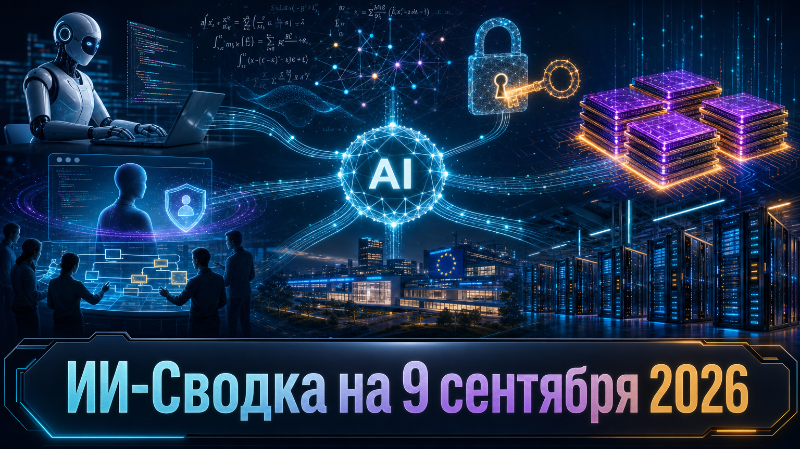

День принёс сразу два многомиллиардных раунда в сегментах ИИ-кодинга и европейских frontier-моделей. Одновременно компании ускоряют переход от моделей к автономным продуктам, корпоративному внедрению и защите доступа к ИИ-сервисам.
Отдельный сигнал для инфраструктуры — сохраняющееся напряжение на рынке серверной памяти. В исследованиях же на первый план вышел пока не подтверждённый независимой экспертизой, но важный спор вокруг заявления OpenAI о математическом доказательстве.
Разработчик coding-агента Devin объявил о Series E объёмом более $2 млрд при оценке $48 млрд. Новыми ведущими инвесторами названы Andreessen Horowitz и Accel; среди действующих участников раунда — Founders Fund, General Catalyst и Avenir.
Cognition также сообщила, что её годовой темп выручки вырос примерно с $492 млн до почти $900 млн с мая. Это показатель самой компании, а не аудированная выручка, однако масштаб раунда показывает: инвесторы по-прежнему видят пространство для нескольких крупных игроков в агентной разработке ПО, а не для одного победителя.
Аналитическая компания TrendForce оценила рост совокупной выручки DRAM-индустрии во втором квартале 2026 года на 59,5% квартал к кварталу — почти до $154,73 млрд. В числе драйверов названы поставки HBM3e, LPDDR5X и высокоёмких RDIMM для обучения LLM и ИИ-инференса.
TrendForce характеризует запасы производителей памяти как исторически низкие и отмечает ограниченное расширение предложения. Это не финансовая отчётность производителей, а оценка отраслевого аналитика, но она указывает, что ограничением ИИ-кластеров становятся не только ускорители: память всё сильнее влияет на стоимость и темпы развёртывания инфраструктуры.
Meta представила Muse — персонального агента ИИ, который может подключаться к почте, календарям, платежам и другим сервисам, выполнять задачи через API или браузер, в том числе заполнять формы, бронировать услуги и совершать покупки. По данным TechCrunch, запуск начался в США через веб, iOS, Android и WhatsApp.
На странице продукта описаны выделенная среда с браузером, терминалом и файловой системой, а также подтверждения пользователя для критических и необратимых действий. Это самостоятельный запуск продукта, а не очередное обновление модели Muse Spark: теперь ключевой вопрос — смогут ли технические ограничения и подтверждения создать достаточный уровень доверия к агенту с доступом к личным сервисам.
Французская Mistral AI объявила о Series D на €3 млрд при post-money оценке более €21 млрд, сообщает TechCrunch. Раунд возглавила Samsung Electronics, а EQT-managed Scaleup Europe Fund и PSG Equity выступили со-лидерами.
Компания намерена направить средства на вычислительные мощности, инфраструктуру, коммерческое развитие и международную экспансию. Раунд укрепляет Mistral AI как европейского независимого поставщика моделей в повестке sovereign AI: конкуренция идёт не только за качество LLM, но и за локальную инфраструктуру, контроль данных и каналы корпоративного распространения.
Google Cloud и Accenture объявили о создании Accenture Gemini Enterprise Business Group. В рамках инициативы планируется сформировать команду из 1 000 forward-deployed engineers для внедрения Gemini Enterprise и агентных решений у корпоративных клиентов.
Новая группа объединит сертифицированных специалистов Accenture, инженеров внедрения и профильные команды Google Cloud. Финансовые параметры и объём будущих продаж не раскрыты, однако партнёрство показывает, что облачные платформы конкурируют уже не только доступом к моделям: всё важнее способность интегрировать агентов в данные, процессы и системы конкретного заказчика.
По данным TechCrunch, Anthropic уведомляла часть пользователей Claude о том, что злоумышленники применяли распространённую infostealer-малварь для кражи login sessions. Компания аннулировала действующие авторизации и предупреждала получателей писем о вероятном заражении устройств.
В одном из описанных случаев похищенный session key использовали для выпуска неавторизованных OAuth-токенов Claude Code и расходования лимитов аккаунта. Масштаб инцидента, число затронутых пользователей и полная техническая атрибуция не раскрыты; важно, что это риск компрометации учётной записи, а не уязвимость модели. Для пользователей агентных и coding-инструментов защита браузерных сессий становится такой же практической задачей, как защита ключей API.
TechCrunch сообщает, что OpenAI опубликовала полный proof по проблеме существования и гладкости решений Навье—Стокса и заявила, что результат был найден нераскрытой моделью следующего поколения. Параллельно математики Тристан Бакмастер и Левент Альпёге объявили о трёх доказательствах и предварительном результате по той же крупной нерешённой проблеме.
Бакмастер утверждает, что работа OpenAI могла опираться на сведения о его ещё не опубликованном подходе. OpenAI отвергла доступ к конкретным пользовательским данным для решения задачи, но, по пересказу издания, не исключила возможного влияния обезличенных данных, использованных для улучшения моделей. Корректность доказательства пока не подтверждена независимой математической экспертизой, а обвинения в неправомерном использовании идей остаются взаимно противоречивыми заявлениями сторон.
*Meta и ее сервисы - в России запрещены